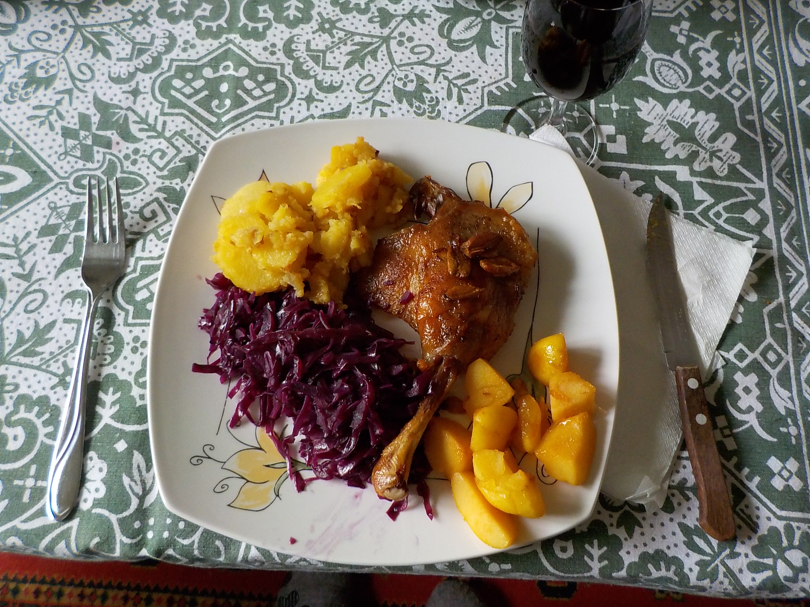

Sütőben sült kacsacomb

Ez a főétel a legtöbb családi ünnepi ebéd kedvence.
Hozzávalók:
Kacsacomb, fokhagyma, zsiradék/kacsazsír, lilakáposzta, olaj, só, bors
- A kacsacombokat sózzuk, borsozzuk.
- Sütőedénybe tesszük egy kis zsiradékkal, ill. fokhagymával.
- 180 fokos sütőben lefedve, másfél órát pároljuk.
- A sütést lefedés nélkül 200 fokon befejezzük, míg meg nem pirul a comb.
- A lilakáposztát legyaluljuk,sózzuk,borsozzuk, kevés olajon megpároljuk.
- A sült kacsacombokat a lilakáposztával tálaljuk. Készíthetünk hozzá köretként
hagymás krumplit is.